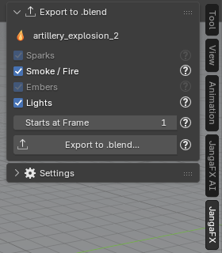

Vérifier et exporter
Vérifier contre une capture LiquiGen
LiquiGen n'enregistre aucun rendu dans son projet : pour comparer, il faut une capture. Dans la section Liquid :
- faites une capture dans LiquiGen (un rendu, ou la vue 3D seule), vue par la caméra du projet ;
- choisissez-la dans LiquiGen Capture ; At Frame prend l'image courante de la scène, corrigez-la si besoin pour qu'elle corresponde à l'image de la capture ;
- cliquez sur Check against LiquiGen.
Le bouton reste grisé tant qu'il n'y a pas de capture ; la raison est écrite dessous. La comparaison porte sur la forme, la luminosité, les couleurs et les reflets, et les différences s'ajoutent au rapport du projet.
Les seuils de cette comparaison sont provisoires (pas encore mesurés sur des captures LiquiGen). Il n'y a pas d'Auto Match pour LiquiGen.
Exporter le liquide en .blend
La section Export to .blend écrit le liquide dans un fichier .blend autonome que vous ajoutez ensuite à
n'importe quelle scène, même sur un ordinateur sans l'add-on.
- Sélectionnez un objet du liquide (ou la ligne de l'export dans la liste) : la section affiche le nom du projet.
- Cochez les parties à écrire :
- Liquid : le liquide et ses particules blanches, avec leurs Geometry Nodes et leurs matériaux ;
- Volumes : les volumes VDB du projet, s'il y en a ;
- Bubbles : les bulles ajoutées par l'assistant IA (grisé s'il n'y en a pas) ;
- Lights : le soleil du projet.
- Réglez Starts at Frame : l'image du fichier qui reçoit le liquide où joue sa première image.
- Cliquez sur Export to .blend... et choisissez où enregistrer le fichier.


Le fichier est écrit par un Blender d'arrière-plan ; votre fichier de travail n'est pas modifié. Le soleil éclaire aussi toute la scène qui reçoit le liquide : décochez Lights pour garder seulement l'éclairage de cette scène.
Les fichiers exportés par LiquiGen ne sont pas copiés : ils restent à leur chemin sur le disque. Ne déplacez pas le dossier des exports tant que vous utilisez le liquide.
Pour ajouter le fichier à une autre scène (File > Append ou Asset Browser) et pour le détail de ce qui est figé, voir Exporter l'effet en .blend.
En cas de problème
La page Dépannage liste les problèmes courants et leurs solutions.